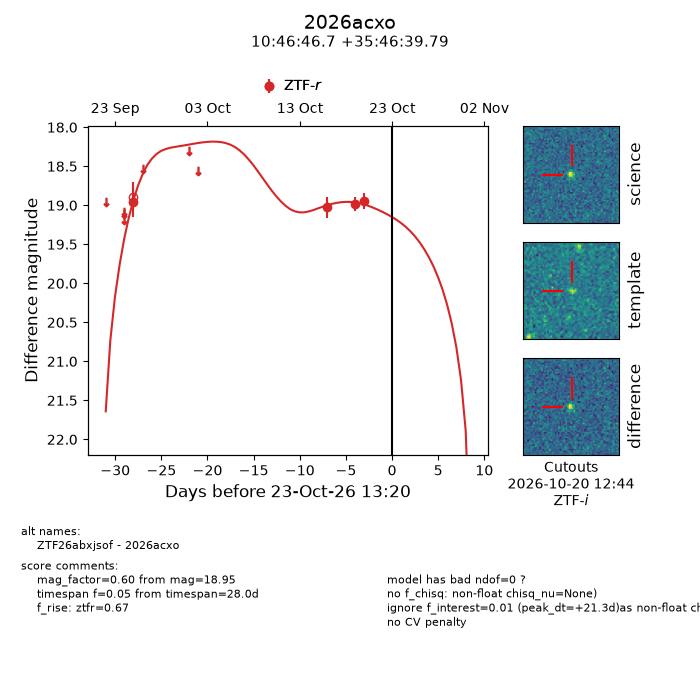
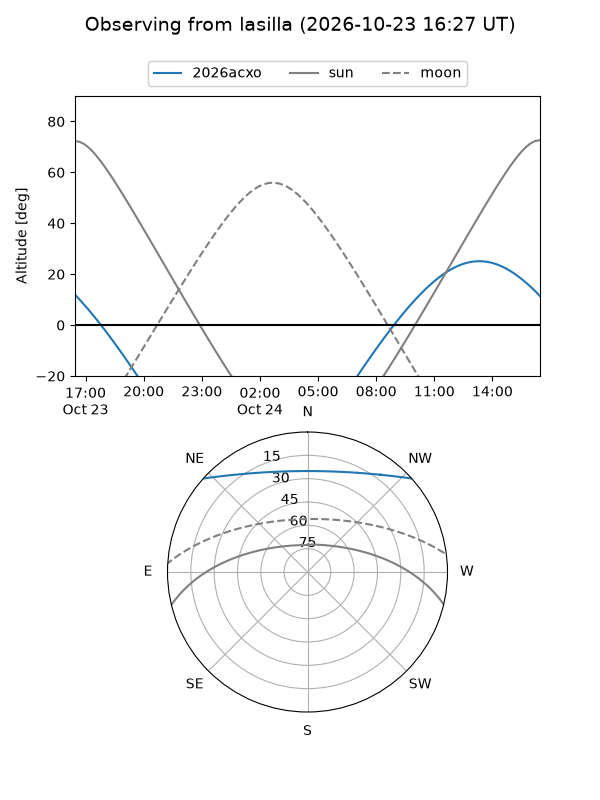
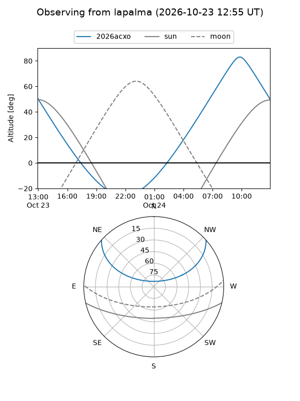
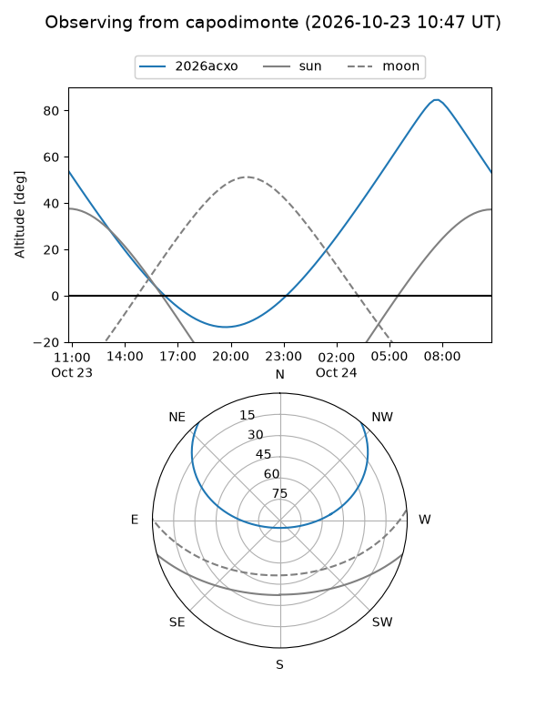
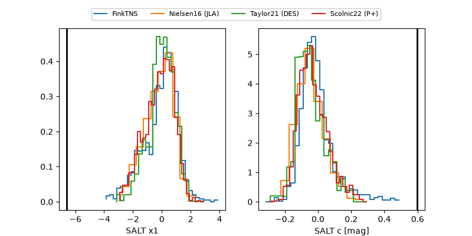

2026acxo
Target 2026acxo at 2026-10-23 13:22
Aliases and brokers:
FINK-ZTF: ztf.fink-portal.org/ZTF26abxjsof
Lasair-ZTF: lasair-ztf.lsst.ac.uk/objects/ZTF26abxjsof
ALeRCE-ZTF: alerce.online/object/ZTF26abxjsof
YSE-PZ: ziggy.ucolick.org/yse/transient_detail/2026acxo
TNS name: wis-tns.org/object/2026acxo
Direct TNS query: direct search
alt names
ZTF26abxjsof (ztf,fink_ztf)
2026acxo (tns,yse)
Coordinates:
equatorial (ra, dec) = 161.6945,+35.77772
equatorial (HMS+DMS) = 10:46:46.68,+35:46:39.79
galactic (l, b) = (187.0417,+62.18055)
Flags:
peak dt: +21.3
Photometry:
last ztfr=18.95
4 ztfr detections
Lightcurve

Visibility



Additional plots
